Candidate List 20261108Last night — ZTF: 4,793 passed basic cuts (124 young) · LSST: 1,933 passed basic cuts (239 young)Previous Day Next Day
Section 1: New Sources (age<1d) Section 2: Old (1-5d) sources observed last nightplaceholder
Section 1: New Afterglow/FBOT Cands Last Night (0)
Section 2: Older Sources Observed Last Night (46)
0. [ZTF] ZTF26acdxtui (Afterglow?) [Back to Top] [Share] [Trigger Swift] [Fritz Alert] [Fritz Source] [Lasair]RA, Dec: 158.0852, 41.37423 10h32m20.45s, 41d22m27.23sGalactic (l, b): 177.26261, 58.20873 ext(g-r) = 0.014Observed last night in r, not detected: limit 20.52 (5σ), 4.97 d after the last r detection at 19.58 → fading ≥ 0.19 mag/day.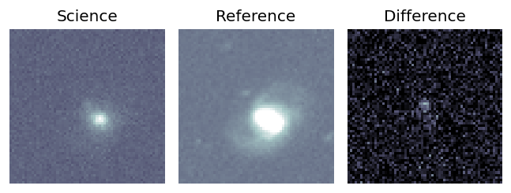
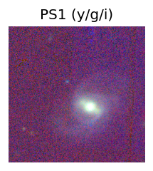
TESS: Sectors [21 48]
NED host (10 arcsec):Found WISEA J103219.96+412221.4 (G, 7.9″); NED spec-z: z=0.0639 [zflag SLS]; peak abs mag = -18.13
PS1: 0 sources in 3 arcsec
LegacySurvey: 1 sources in 3 arcsec Closest: d = 6.96 arcsec, 40.1 deg (east of north) photoz=0.02 (68% bounds 0.01, 0.06), type=PSF peak abs mag (ext. corrected) = -15.23 (68% bounds -14.07, -17.94)
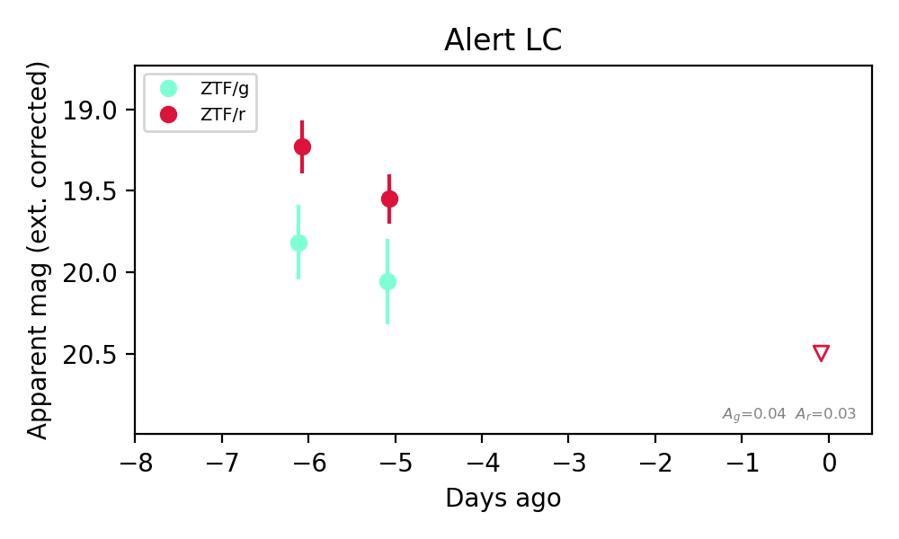
Extinction-corrected gr color:
From alerts: 0.51 +/- 0.3 mag
Consistent with synchrotron, g-r>0!
Rise Rate:
Fade Rate:
r: 0.21 mag/day
1. [ZTF] ZTF26acdydgv (FBOT?) [Back to Top] [Share] [Trigger Swift] [Fritz Alert] [Fritz Source] [Lasair]RA, Dec: 165.27096, 64.18865 11h 1m5.03s, 64d11m19.16sGalactic (l, b): 140.80718, 48.93279 ext(g-r) = 0.017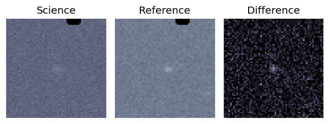
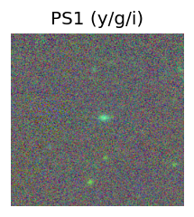
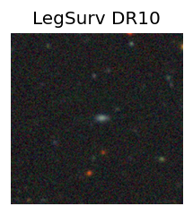
TESS: Sectors [ 14 21 41 48 74 75 119 120]
SDSS (<15 kpc):Found SDSS phot-z: z=0.24; peak abs mag = -20.89
PS1: 0 sources in 3 arcsec
LegacySurvey: 1 sources in 3 arcsec Closest: d = 2.03 arcsec, 272.6 deg (east of north) photoz=0.18 (68% bounds 0.15, 0.22), type=EXP peak abs mag (ext. corrected) = -20.14 (68% bounds -19.73, -20.68)
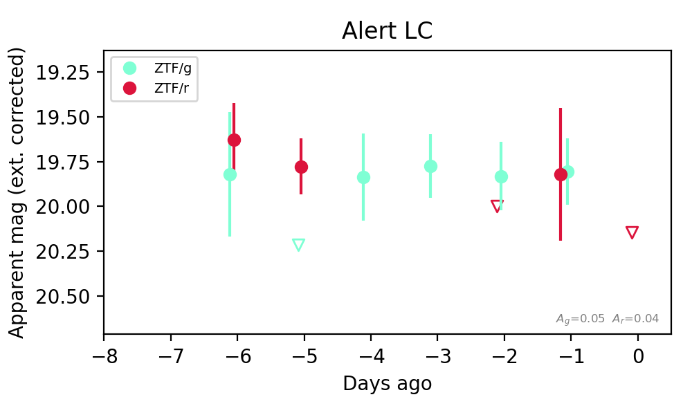
Extinction-corrected gr color:
From alerts: -0.02 +/- 0.41 mag
Consistent with synchrotron, g-r>0!
Rise Rate:
g: 0.22 mag/day
r: 0.03 mag/day
Fade Rate:
r: 0.09 mag/day
2. [ZTF] ZTF26acdzrfn (FBOT?) [Back to Top] [Share] [Trigger Swift] [Fritz Alert] [Fritz Source] [Lasair]RA, Dec: 320.90787, -5.92519 21h23m37.89s, -5d-55m-30.68sGalactic (l, b): 46.40499, -36.34629 ext(g-r) = 0.094

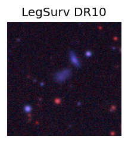
TESS: Sectors [ 55 82 92 116]
SDSS (<15 kpc):Found SDSS phot-z: z=0.30; peak abs mag = -24.22
PS1: 0 sources in 3 arcsec
LegacySurvey: 1 sources in 3 arcsec Closest: d = 2.18 arcsec, 28.8 deg (east of north) photoz=0.03 (68% bounds 0.01, 0.08), type=SER peak abs mag (ext. corrected) = -19.2 (68% bounds -16.97, -21.09)

Extinction-corrected gr color:
From alerts: -0.12 +/- 0.05 mag
Extinction-corrected gi color:
From alerts: -0.42 +/- 0.16 mag
Extinction-corrected ri color:
From alerts: -0.32 +/- 0.13 mag
Rise Rate:
g: 0.27 mag/day
r: 0.28 mag/day
i: 0.07 mag/day
Fade Rate:
3. [ZTF] ZTF26aceadfg (Afterglow?) [Back to Top] [Share] [Trigger Swift] [Fritz Alert] [Fritz Source] [Lasair]RA, Dec: 2.15802, -0.60204 0h 8m37.93s, 0d-36m-7.34sGalactic (l, b): 99.99017, -61.55231 WARNING: -1.41 deg from ecliptic plane ext(g-r) = 0.042Observed last night in g, not detected: limit 20.37 (5σ), 5.04 d after the last g detection at 19.68 → fading ≥ 0.14 mag/day.


TESS: Sectors [42 70]
PS1: 0 sources in 3 arcsec
LegacySurvey: 1 sources in 3 arcsec Closest: d = 2.27 arcsec, 273.4 deg (east of north) photoz=1.11 (68% bounds 0.66, 1.5), type=REX peak abs mag (ext. corrected) = -25.16 (68% bounds -23.8, -25.98)

Extinction-corrected gr color:
From alerts: 0.28 +/- 0.26 mag
Consistent with synchrotron, g-r>0!
Rise Rate:
r: 0.07 mag/day
Fade Rate:
g: 0.24 mag/day
r: 0.27 mag/day
4. [ZTF] ZTF26acecgop (FBOT?) [Back to Top] [Share] [Trigger Swift] [Fritz Alert] [Fritz Source] [Lasair]RA, Dec: 359.77281, 51.7971 23h59m5.47s, 51d47m49.56sGalactic (l, b): 114.75102, -10.24123 ext(g-r) = 0.249


TESS: Sectors [57 84]
PS1: 1 source in 3 arcsec Closest: d = 1.46 arcsec photoz=0.11+/-0.01 peak abs mag = -20.77
LegacySurvey: 0 sources in 3 arcsec

Extinction-corrected gr color:
From alerts: -0.15 +/- 0.1 mag
Rise Rate:
g: 0.22 mag/day
r: 0.23 mag/day
Fade Rate:
5. [ZTF] ZTF26aceiwfc (Afterglow?) [Back to Top] [Share] [Trigger Swift] [Fritz Alert] [Fritz Source] [Lasair]RA, Dec: 112.65768, -6.02593 7h30m37.84s, -6d-1m-33.35sGalactic (l, b): 222.80739, 5.89763 ext(g-r) = 0.14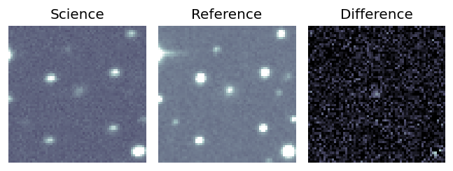
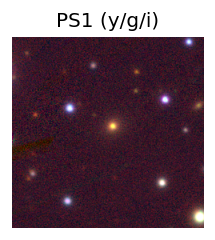

TESS: Sectors [ 7 34 111 112]
PS1: 1 source in 3 arcsec Closest: d = 2.18 arcsec photoz=0.08+/-0.00 peak abs mag = -19.03
LegacySurvey: 0 sources in 3 arcsec
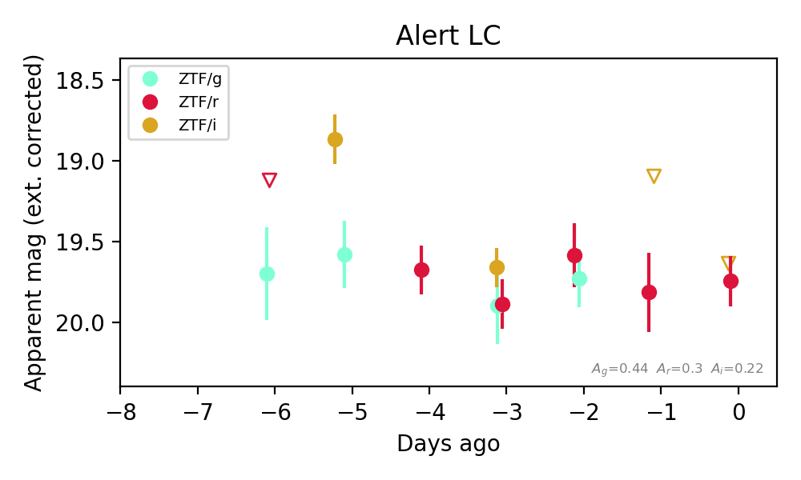
Extinction-corrected gr color:
From alerts: 0.14 +/- 0.27 mag
Extinction-corrected gi color:
From alerts: 0.24 +/- 0.27 mag
Extinction-corrected ri color:
From alerts: 0.11 +/- 99 mag
Consistent with synchrotron, g-r>0!
Rise Rate:
i: 0.07 mag/day
Fade Rate:
i: 0.38 mag/day
6. [ZTF] ZTF26aceiwux (Afterglow?) [Back to Top] [Share] [Trigger Swift] [Fritz Alert] [Fritz Source] [Lasair]RA, Dec: 134.12336, 31.82494 8h56m29.61s, 31d49m29.79sGalactic (l, b): 192.66077, 39.26439 ext(g-r) = 0.032Observed last night in r, not detected: limit 20.57 (5σ), 2.04 d after the last r detection at 19.52 → fading ≥ 0.51 mag/day.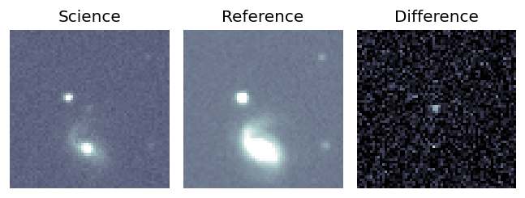
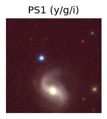
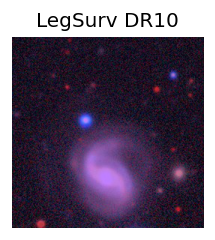
TESS: Sectors 21
PS1: 0 sources in 3 arcsec
LegacySurvey: 1 sources in 3 arcsec Closest: d = 8.60 arcsec, 68.4 deg (east of north) photoz=0.95 (68% bounds 0.03, 2.65), type=PSF peak abs mag (ext. corrected) = -24.57 (68% bounds -16.54, -27.3)
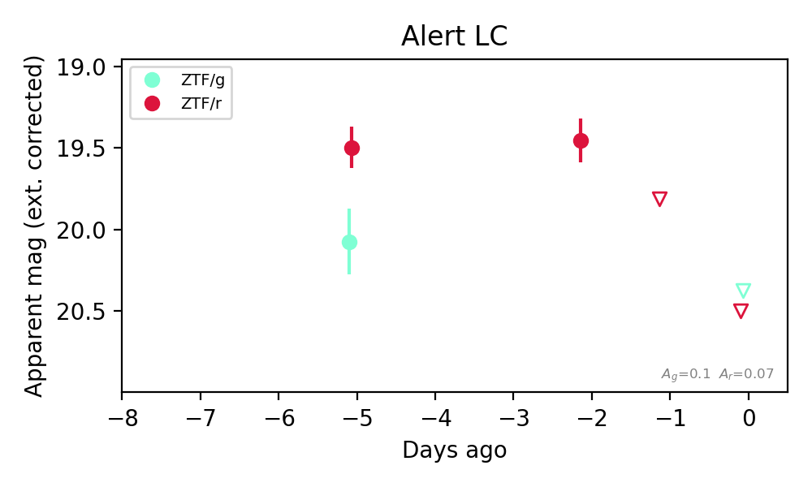
Extinction-corrected gr color:
From alerts: 0.58 +/- 0.24 mag
Consistent with synchrotron, g-r>0!
Rise Rate:
r: 0.03 mag/day
Fade Rate:
r: 0.51 mag/day
7. [ZTF] ZTF26acekidc (Afterglow?) [Back to Top] [Share] [Trigger Swift] [Fritz Alert] [Fritz Source] [Lasair]RA, Dec: 124.82568, -1.31403 8h19m18.16s, -1d-18m-50.50sGalactic (l, b): 224.56814, 18.80597 ext(g-r) = 0.076Observed last night in g, not detected: limit 20.05 (5σ), 6.04 d after the last g detection at 19.37 → fading ≥ 0.11 mag/day.


TESS: Sectors [ 7 34 61 88 112]
SDSS (<15 kpc):Found SDSS phot-z: z=0.38; peak abs mag = -23.11
PS1: 0 sources in 3 arcsec
LegacySurvey: 1 sources in 3 arcsec Closest: d = 6.76 arcsec, 245.7 deg (east of north) photoz=0.44 (68% bounds 0.37, 0.52), type=REX peak abs mag (ext. corrected) = -23.5 (68% bounds -23.05, -23.93)

Extinction-corrected gr color:
From alerts: 1.16 +/- 99 mag
Rise Rate:
r: 45.4 mag/day
Fade Rate:
g: 0.53 mag/day
r: 0.6 mag/day
8. [ZTF] ZTF26aceemoa (FBOT?) [Back to Top] [Share] [Trigger Swift] [Fritz Alert] [Fritz Source] [Lasair]RA, Dec: 62.77433, 19.58053 4h11m5.84s, 19d34m49.90sGalactic (l, b): 174.35813, -22.77608 WARNING: -1.48 deg from ecliptic plane ext(g-r) = 0.51


TESS: Sectors [44 70 71]
SDSS (<15 kpc):Found SDSS phot-z: z=0.05; peak abs mag = -18.62
PS1: 1 source in 3 arcsec Closest: d = 1.77 arcsec photoz=0.15+/-0.10 peak abs mag = -21.36
LegacySurvey: 0 sources in 3 arcsec

Extinction-corrected gr color:
From alerts: -0.19 +/- 0.14 mag
Extinction-corrected gi color:
From alerts: -1.33 +/- 99 mag
Extinction-corrected ri color:
From alerts: -1.14 +/- 99 mag
Rise Rate:
g: 0.49 mag/day
r: 0.1 mag/day
Fade Rate:
g: 28.44 mag/day
9. [ZTF] ZTF26aceldss (Afterglow?) [Back to Top] [Share] [Trigger Swift] [Fritz Alert] [Fritz Source] [Lasair]RA, Dec: 118.42083, 30.43711 7h53m41.00s, 30d26m13.60sGalactic (l, b): 190.35221, 25.90313 ext(g-r) = 0.057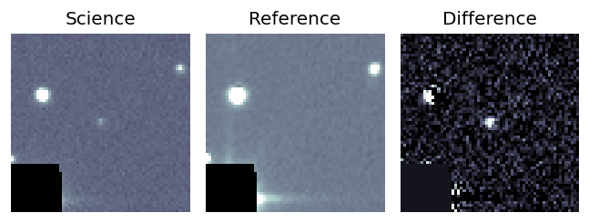
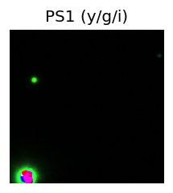
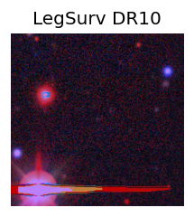
TESS: Sectors [20 44 45 46 47 60 72]
PS1: 0 sources in 3 arcsec
LegacySurvey: 1 sources in 3 arcsec Closest: d = 0.18 arcsec, 14.9 deg (east of north) photoz=0.97 (68% bounds 0.8, 1.15), type=PSF peak abs mag (ext. corrected) = -24.69 (68% bounds -24.18, -25.15)
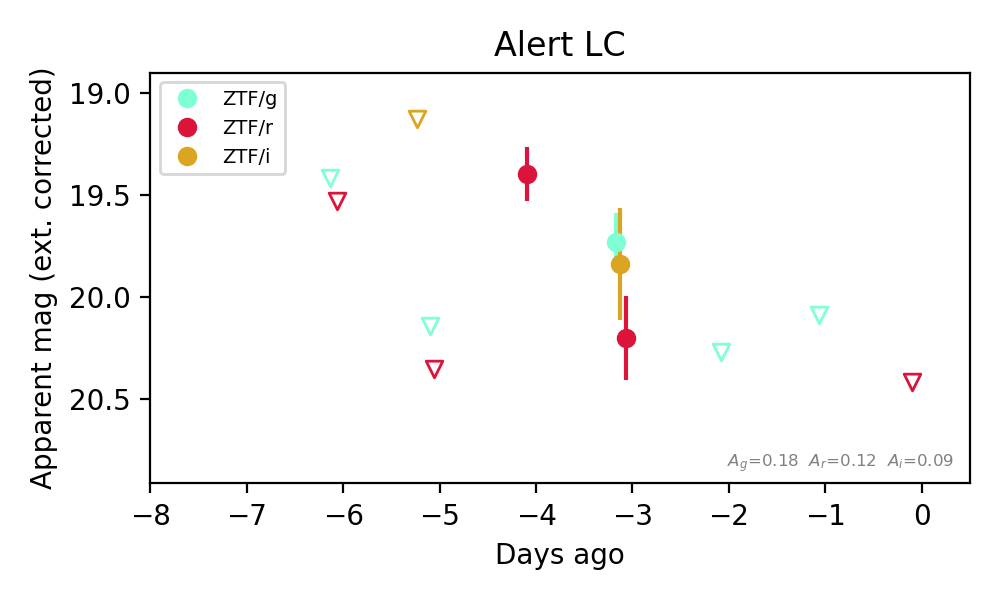
Extinction-corrected gr color:
From alerts: -0.47 +/- 0.25 mag
Extinction-corrected gi color:
From alerts: -0.11 +/- 0.31 mag
Extinction-corrected ri color:
From alerts: 0.36 +/- 0.34 mag
Consistent with synchrotron, g-r>0!
Rise Rate:
g: 0.21 mag/day
r: 0.99 mag/day
Fade Rate:
g: 0.5 mag/day
r: 0.78 mag/day
10. [ZTF] ZTF26acetyyo (Afterglow?) [Back to Top] [Share] [Trigger Swift] [Fritz Alert] [Fritz Source] [Lasair]RA, Dec: 95.78953, -4.30062 6h23m9.49s, -4d-18m-2.24sGalactic (l, b): 213.55574, -8.24615 ext(g-r) = 0.393Observed last night in g, not detected: limit 20.48 (5σ), 5.95 d after the last g detection at 19.52 → fading ≥ 0.16 mag/day.


TESS: Sectors [ 6 33 87 110 111]
PS1: 1 source in 3 arcsec Closest: d = 6.84 arcsec photoz=0.15+/-0.13 peak abs mag = -20.44
LegacySurvey: 0 sources in 3 arcsec

Extinction-corrected gr color:
From alerts: -0.36 +/- 99 mag
Extinction-corrected gi color:
From alerts: 0.28 +/- 99 mag
Rise Rate:
g: 0.05 mag/day
Fade Rate:
g: 0.56 mag/day
11. [ZTF] ZTF26acewktq (Afterglow?) [Back to Top] [Share] [Trigger Swift] [Fritz Alert] [Fritz Source] [Lasair]RA, Dec: 83.80512, 41.43002 5h35m13.23s, 41d25m48.08sGalactic (l, b): 168.26381, 4.81178 ext(g-r) = 0.528Observed last night in r, not detected: limit 20.35 (5σ), 2.84 d after the last r detection at 19.16 → fading ≥ 0.42 mag/day.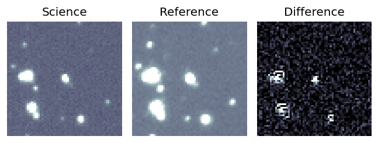
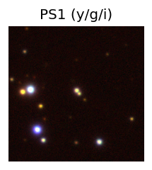

TESS: Sectors [59 73 86]
PS1: 0 sources in 3 arcsec
LegacySurvey: 0 sources in 3 arcsec
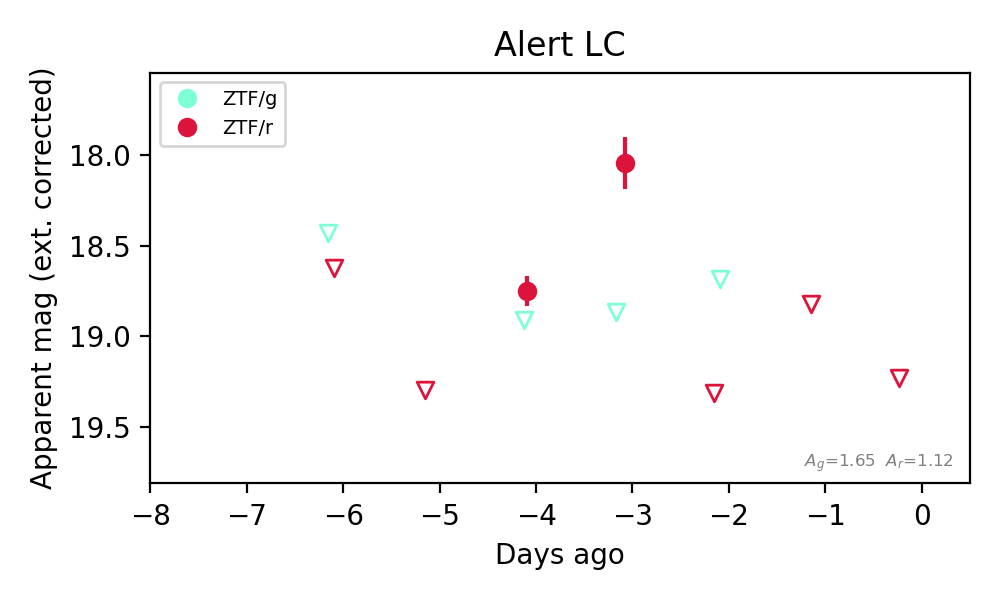
Extinction-corrected gr color:
From alerts: 0.82 +/- 99 mag
Rise Rate:
r: 0.69 mag/day
Fade Rate:
r: 1.38 mag/day
12. [ZTF] ZTF26aceaevy (Afterglow?FBOT?) [Back to Top] [Share] [Trigger Swift] [Fritz Alert] [Fritz Source] [Lasair]RA, Dec: 11.53836, 0.39278 0h46m9.21s, 0d23m34.00sGalactic (l, b): 120.07476, -62.44965 WARNING: -4.2 deg from ecliptic plane ext(g-r) = 0.022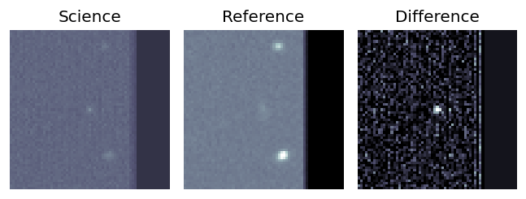
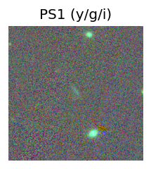
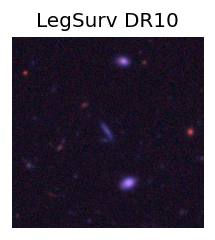
TESS: Sectors [42 43 70]
SDSS (<15 kpc):Found SDSS phot-z: z=0.35; peak abs mag = -22.05
PS1: 0 sources in 3 arcsec
LegacySurvey: 1 sources in 3 arcsec Closest: d = 0.51 arcsec, 45.7 deg (east of north) photoz=0.09 (68% bounds 0.06, 0.15), type=SER peak abs mag (ext. corrected) = -18.86 (68% bounds -17.82, -20.03)
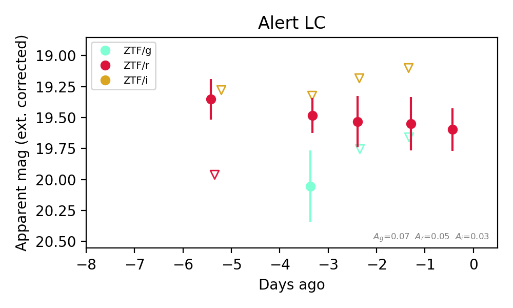
Extinction-corrected gr color:
From alerts: 0.11 +/- 99 mag
Extinction-corrected gi color:
From alerts: 0.73 +/- 99 mag
Extinction-corrected ri color:
From alerts: 0.45 +/- 99 mag
Rise Rate:
r: 0.23 mag/day
Fade Rate:
r: 8.42 mag/day
13. [ZTF] ZTF26acebohm (FBOT?) [Back to Top] [Share] [Trigger Swift] [Fritz Alert] [Fritz Source] [Lasair]RA, Dec: 359.72604, 12.14779 23h58m54.25s, 12d 8m52.06sGalactic (l, b): 103.26141, -48.70722 ext(g-r) = 0.106

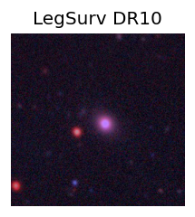
TESS: Sectors [42 43 56 83]
SDSS (<15 kpc):Found SDSS phot-z: z=0.06; peak abs mag = -19.81
PS1: 0 sources in 3 arcsec
LegacySurvey: 1 sources in 3 arcsec Closest: d = 0.41 arcsec, 356.8 deg (east of north) photoz=0.38 (68% bounds 0.24, 0.69), type=EXP peak abs mag (ext. corrected) = -24.28 (68% bounds -23.09, -25.84)

Extinction-corrected gr color:
From alerts: -0.11 +/- 0.05 mag
Extinction-corrected gi color:
From alerts: -0.43 +/- 0.08 mag
Extinction-corrected ri color:
From alerts: -0.32 +/- 0.09 mag
Rise Rate:
g: 0.31 mag/day
r: 0.22 mag/day
i: 0.25 mag/day
Fade Rate:
14. [ZTF] ZTF26acecdco (Afterglow?FBOT?) [Back to Top] [Share] [Trigger Swift] [Fritz Alert] [Fritz Source] [Lasair]RA, Dec: 35.32596, 44.00669 2h21m18.23s, 44d 0m24.07sGalactic (l, b): 139.54227, -15.94751 ext(g-r) = 0.083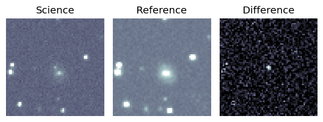
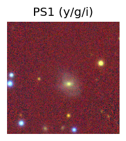

TESS: Sectors [18 58 85]
PS1: 1 source in 3 arcsec Closest: d = 4.07 arcsec photoz=0.13+/-0.03 peak abs mag = -19.59
LegacySurvey: 0 sources in 3 arcsec
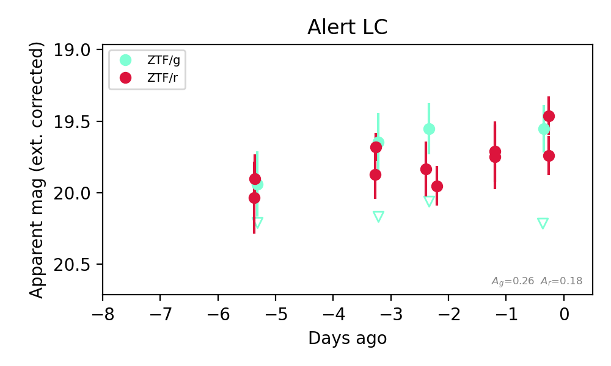
Extinction-corrected gr color:
From alerts: -0.05 +/- 0.19 mag
Consistent with synchrotron, g-r>0!
Rise Rate:
g: 27.99 mag/day
Fade Rate:
g: 0.47 mag/day
15. [ZTF] ZTF26aceipjj (FBOT?) [Back to Top] [Share] [Trigger Swift] [Fritz Alert] [Fritz Source] [Lasair]RA, Dec: 105.72528, -18.02982 7h 2m54.07s, -18d-1m-47.35sGalactic (l, b): 230.30557, -5.67127 ext(g-r) = 0.508


TESS: Sectors [ 7 33 87 108 109 110 111]
PS1: 1 source in 3 arcsec Closest: d = 8.30 arcsec photoz=1.02+/-0.08 peak abs mag = -28.69
LegacySurvey: 0 sources in 3 arcsec

Extinction-corrected gr color:
From alerts: -0.41 +/- 0.07 mag
Rise Rate:
i: 0.22 mag/day
Fade Rate:
g: 0.2 mag/day
i: 0.13 mag/day
16. [ZTF] ZTF26acekvtg (Afterglow?) [Back to Top] [Share] [Trigger Swift] [Fritz Alert] [Fritz Source] [Lasair]RA, Dec: 119.18115, 27.54392 7h56m43.48s, 27d32m38.13sGalactic (l, b): 193.63516, 25.63422 ext(g-r) = 0.039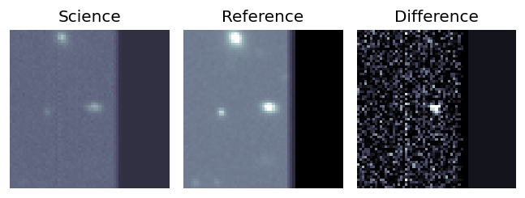
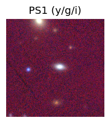
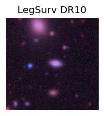
TESS: Sectors [20 44 46 47 71 72]
SDSS (<15 kpc):Found SDSS phot-z: z=0.09; peak abs mag = -18.59
NED host (10 arcsec):Found [TTK2017] 27035 (GClstr, 2.6″); NED spec-z: z=0.0991 [zflag SST]; peak abs mag = -18.93
PS1: 0 sources in 3 arcsec
LegacySurvey: 1 sources in 3 arcsec Closest: d = 2.67 arcsec, 276.8 deg (east of north) photoz=0.06 (68% bounds 0.04, 0.08), type=SER peak abs mag (ext. corrected) = -17.81 (68% bounds -17.05, -18.42)
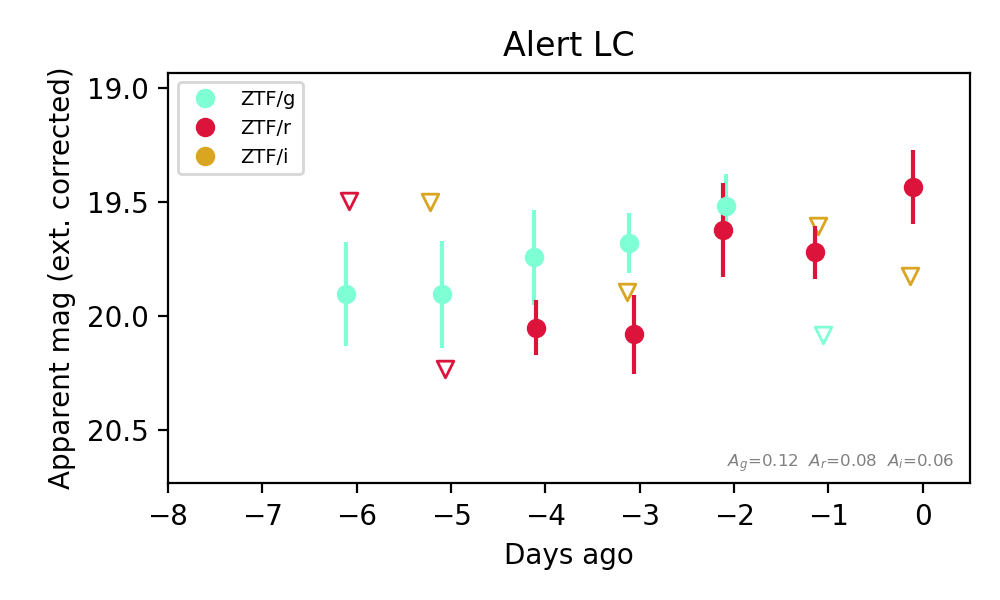
Extinction-corrected gr color:
From alerts: 0.36 +/- 99 mag
Extinction-corrected gi color:
From alerts: -0.21 +/- 99 mag
Extinction-corrected ri color:
From alerts: -0.39 +/- 99 mag
Rise Rate:
g: 0.06 mag/day
r: 0.21 mag/day
Fade Rate:
g: 0.55 mag/day
17. [ZTF] ZTF26acenptw (Afterglow?FBOT?) [Back to Top] [Share] [Trigger Swift] [Fritz Alert] [Fritz Source] [Lasair]RA, Dec: 326.46373, 21.62607 21h45m51.29s, 21d37m33.86sGalactic (l, b): 75.5943, -23.73725 ext(g-r) = 0.119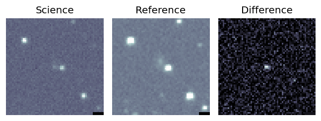
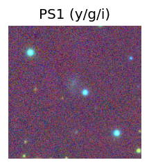
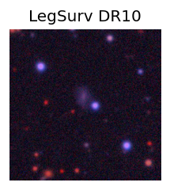
TESS: Sectors [55 82]
SDSS (<15 kpc):Found SDSS phot-z: z=0.14; peak abs mag = -20.01
PS1: 0 sources in 3 arcsec
LegacySurvey: 1 sources in 3 arcsec Closest: d = 3.05 arcsec, 63.2 deg (east of north) photoz=1.04 (68% bounds 0.52, 1.41), type=REX peak abs mag (ext. corrected) = -25.13 (68% bounds -23.29, -25.95)
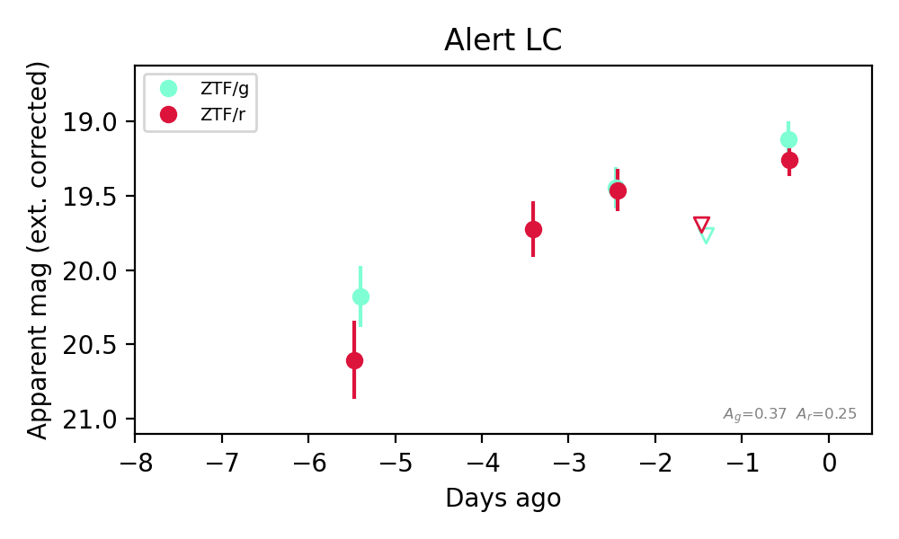
Extinction-corrected gr color:
From alerts: -0.13 +/- 0.17 mag
Consistent with synchrotron, g-r>0!
Rise Rate:
g: 0.67 mag/day
r: 0.43 mag/day
Fade Rate:
g: 0.31 mag/day
18. [ZTF] ZTF26aceoflw (FBOT?) [Back to Top] [Share] [Trigger Swift] [Fritz Alert] [Fritz Source] [Lasair]RA, Dec: 10.86092, -2.03773 0h43m26.62s, -2d-2m-15.84sGalactic (l, b): 118.23033, -64.83648 ext(g-r) = 0.024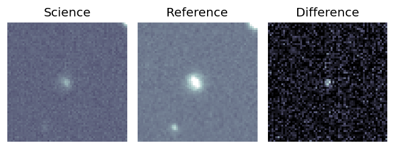
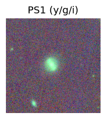
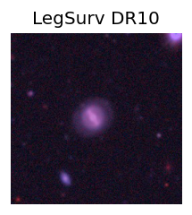
TESS: Sectors [ 3 30 42 43 70 97]
SDSS (<15 kpc):Found SDSS phot-z: z=0.09; peak abs mag = -18.66
PS1: 0 sources in 3 arcsec
LegacySurvey: 1 sources in 3 arcsec Closest: d = 1.44 arcsec, 76.3 deg (east of north) photoz=0.15 (68% bounds 0.09, 0.19), type=SER peak abs mag (ext. corrected) = -19.9 (68% bounds -18.82, -20.47)
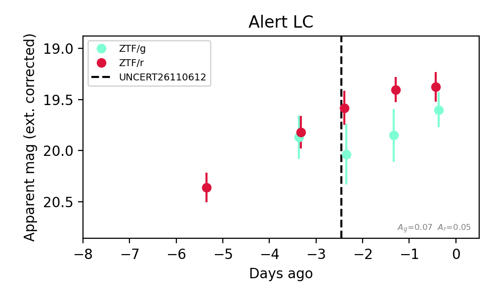
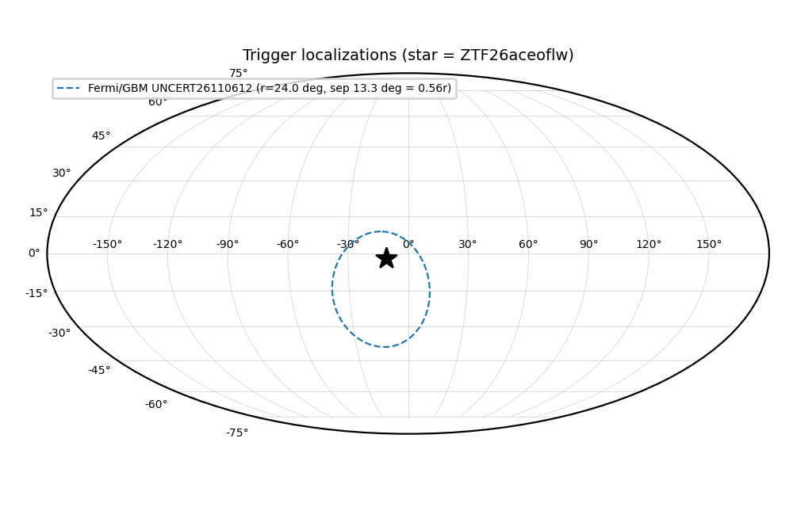
Extinction-corrected gr color:
From alerts: 0.22 +/- 0.22 mag
Consistent with synchrotron, g-r>0!
Rise Rate:
r: 0.21 mag/day
Fade Rate:
19. [ZTF] ZTF26aceonsq (FBOT?) [Back to Top] [Share] [Trigger Swift] [Fritz Alert] [Fritz Source] [Lasair]RA, Dec: 359.40305, -26.75742 23h57m36.73s, -26d-45m-26.73sGalactic (l, b): 31.63464, -78.00414 ext(g-r) = 0.016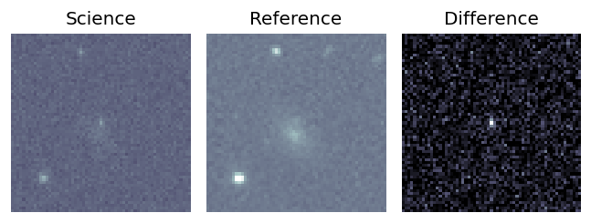
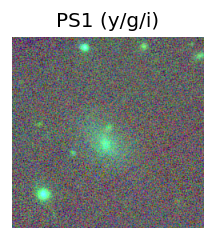
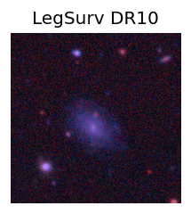
TESS: Sectors [ 2 29 69 96 107]
NED host (10 arcsec):Found WISEA J235736.78-264528.8 (G, 4.6″); NED spec-z: z=0.0434 [zflag SUN]; peak abs mag = -18.11
PS1: 0 sources in 3 arcsec
LegacySurvey: 1 sources in 3 arcsec Closest: d = 1.02 arcsec, 9.1 deg (east of north) photoz=0.71 (68% bounds 0.67, 0.76), type=EXP peak abs mag (ext. corrected) = -24.86 (68% bounds -24.73, -25.06)
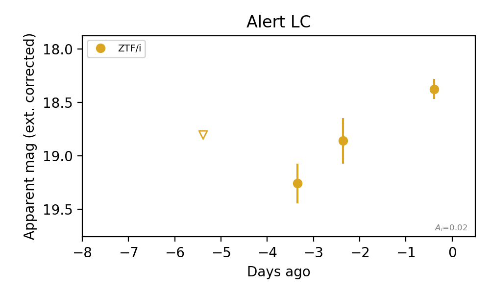
Rise Rate:
i: 0.29 mag/day
Fade Rate:
20. [ZTF] ZTF26aceqzef (FBOT?) [Back to Top] [Share] [Trigger Swift] [Fritz Alert] [Fritz Source] [Lasair]RA, Dec: 55.78047, 0.6487 3h43m7.31s, 0d38m55.33sGalactic (l, b): 186.13203, -40.28035 ext(g-r) = 0.121

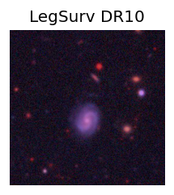
TESS: Sectors [ 5 31 109]
NED host (10 arcsec):Found WISEA J034307.30+003849.5 (G, 5.8″); NED spec-z: z=0.0680 [zflag SLS]; peak abs mag = -18.41
PS1: 0 sources in 3 arcsec
LegacySurvey: 1 sources in 3 arcsec Closest: d = 1.50 arcsec, 128.5 deg (east of north) photoz=0.34 (68% bounds 0.16, 0.79), type=PSF peak abs mag (ext. corrected) = -22.24 (68% bounds -20.33, -24.43)

Extinction-corrected gr color:
From alerts: 0.02 +/- 0.14 mag
Extinction-corrected gi color:
From alerts: -0.25 +/- 0.19 mag
Extinction-corrected ri color:
From alerts: -0.28 +/- 0.16 mag
Consistent with synchrotron, g-r>0!
Rise Rate:
g: 0.26 mag/day
r: 0.23 mag/day
Fade Rate:
21. [ZTF] ZTF26acerebz (FBOT?) [Back to Top] [Share] [Trigger Swift] [Fritz Alert] [Fritz Source] [Lasair]RA, Dec: 32.22566, 7.7038 2h 8m54.16s, 7d42m13.67sGalactic (l, b): 153.99197, -50.43725 ext(g-r) = 0.063

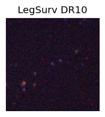
TESS: Sectors [42 43 70 71]
SDSS (<15 kpc):Found SDSS phot-z: z=0.15; peak abs mag = -20.00
PS1: 0 sources in 3 arcsec
LegacySurvey: 1 sources in 3 arcsec Closest: d = 0.49 arcsec, 39.9 deg (east of north) photoz=0.46 (68% bounds 0.34, 0.56), type=REX peak abs mag (ext. corrected) = -22.76 (68% bounds -22.02, -23.28)

Extinction-corrected gr color:
From alerts: -0.02 +/- 0.23 mag
Extinction-corrected gi color:
From alerts: -0.41 +/- 0.29 mag
Extinction-corrected ri color:
From alerts: -0.33 +/- 0.29 mag
Consistent with synchrotron, g-r>0!
Rise Rate:
g: 0.23 mag/day
r: 0.14 mag/day
Fade Rate:
22. [ZTF] ZTF26acesdxs (Afterglow?) [Back to Top] [Share] [Trigger Swift] [Fritz Alert] [Fritz Source] [Lasair]RA, Dec: 39.99659, 35.41068 2h39m59.18s, 35d24m38.45sGalactic (l, b): 146.64318, -22.41402 ext(g-r) = 0.064Observed last night in r, not detected: limit 20.51 (5σ), 1.94 d after the last r detection at 19.85 → fading ≥ 0.34 mag/day.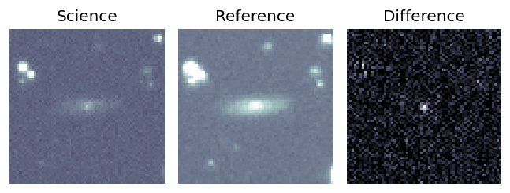

TESS: Sectors [18 58 85]
PS1: 1 source in 3 arcsec Closest: d = 0.73 arcsec photoz=0.06+/-0.02 peak abs mag = -17.39
LegacySurvey: 0 sources in 3 arcsec
Extinction-corrected gr color:
From alerts: 0.13 +/- 0.27 mag
Consistent with synchrotron, g-r>0!
Rise Rate:
Fade Rate:
r: 0.34 mag/day
23. [ZTF] ZTF26aceujai (FBOT?) [Back to Top] [Share] [Trigger Swift] [Fritz Alert] [Fritz Source] [Lasair]RA, Dec: 147.54124, 23.53834 9h50m9.90s, 23d32m18.04sGalactic (l, b): 207.5446, 49.09904 ext(g-r) = 0.037
TESS: Sectors [21 45 46 48 72]
SDSS (<15 kpc):Found SDSS phot-z: z=0.32; peak abs mag = -23.13
PS1: 0 sources in 3 arcsec
LegacySurvey: 1 sources in 3 arcsec Closest: d = 0.68 arcsec, 243.8 deg (east of north) photoz=0.76 (68% bounds 0.48, 1.03), type=REX peak abs mag (ext. corrected) = -25.38 (68% bounds -24.17, -26.21)
Extinction-corrected gr color:
From alerts: -0.16 +/- 0.07 mag
Extinction-corrected gi color:
From alerts: -0.45 +/- 0.11 mag
Extinction-corrected ri color:
From alerts: -0.23 +/- 0.13 mag
Rise Rate:
g: 0.12 mag/day
r: 0.12 mag/day
i: 0.25 mag/day
Fade Rate:
24. [ZTF] ZTF26acevgtk (FBOT?) [Back to Top] [Share] [Trigger Swift] [Fritz Alert] [Fritz Source] [Lasair]RA, Dec: 126.61307, 39.20568 8h26m27.14s, 39d12m20.45sGalactic (l, b): 182.28406, 34.47303 ext(g-r) = 0.047
TESS: Sectors 47
SDSS (<15 kpc):Found SDSS phot-z: z=0.17; peak abs mag = -20.40
PS1: 0 sources in 3 arcsec
LegacySurvey: 1 sources in 3 arcsec Closest: d = 1.06 arcsec, 16.8 deg (east of north) photoz=0.12 (68% bounds 0.1, 0.16), type=SER peak abs mag (ext. corrected) = -19.61 (68% bounds -19.14, -20.34)
Extinction-corrected gr color:
From alerts: -0.14 +/- 0.17 mag
Consistent with synchrotron, g-r>0!
Rise Rate:
g: 0.24 mag/day
r: 0.26 mag/day
Fade Rate:
25. [ZTF] ZTF26acevisb (FBOT?) [Back to Top] [Share] [Trigger Swift] [Fritz Alert] [Fritz Source] [Lasair]RA, Dec: 138.10646, 50.67473 9h12m25.55s, 50d40m29.02sGalactic (l, b): 167.70295, 42.70469 ext(g-r) = 0.016
TESS: Sectors [21 47]
SDSS (<15 kpc):Found SDSS phot-z: z=0.28; peak abs mag = -21.45
PS1: 0 sources in 3 arcsec
LegacySurvey: 1 sources in 3 arcsec Closest: d = 1.07 arcsec, 231.0 deg (east of north) photoz=0.08 (68% bounds 0.04, 0.12), type=EXP peak abs mag (ext. corrected) = -18.35 (68% bounds -16.88, -19.43)
Extinction-corrected gr color:
From alerts: -0.01 +/- 0.18 mag
Consistent with synchrotron, g-r>0!
Rise Rate:
g: 0.21 mag/day
r: 0.2 mag/day
Fade Rate:
26. [ZTF] ZTF26acffdhm (Afterglow?) [Back to Top] [Share] [Trigger Swift] [Fritz Alert] [Fritz Source] [Lasair]RA, Dec: 131.06678, 60.42883 8h44m16.03s, 60d25m43.77sGalactic (l, b): 156.00968, 37.17048 ext(g-r) = 0.104Observed last night in r, not detected: limit 20.47 (5σ), 2.00 d after the last r detection at 20.07 → fading ≥ 0.20 mag/day.
TESS: Sectors [20 47 60]
NED host (10 arcsec):Found WISEA J084416.53+602550.7 (G, 7.9″); NED spec-z: z=0.1221 [zflag SLS]; peak abs mag = -19.01
PS1: 0 sources in 3 arcsec
LegacySurvey: 1 sources in 3 arcsec Closest: d = 6.03 arcsec, 268.0 deg (east of north) photoz=0.35 (68% bounds 0.31, 0.41), type=PSF peak abs mag (ext. corrected) = -21.59 (68% bounds -21.28, -22.0)
Extinction-corrected gr color:
From alerts: 0.03 +/- 0.26 mag
Consistent with synchrotron, g-r>0!
Rise Rate:
Fade Rate:
r: 0.2 mag/day
27. [LSST] 171167616344260661 (FBOT?) [Back to Top] [Fritz Alert] [Fritz Source] [Lasair]RA, Dec: 60.08822, -48.65171 4h 0m21.17s, -48d-39m-6.16sGalactic (l, b): 256.63977, -47.86586 ext(g-r) = 0.009
TESS: Sectors [ 3 4 5 30 31 97]
PS1: 0 sources in 3 arcsec
LegacySurvey: 1 sources in 3 arcsec Closest: d = 0.08 arcsec, 338.3 deg (east of north) photoz=0.93 (68% bounds 0.7, 1.23), type=DEV peak abs mag (ext. corrected) = -20.36 (68% bounds -19.59, -21.09)
Rise Rate:
r: 0.29 mag/day
Fade Rate:
28. [LSST] 171167627140399126 (FBOT?) [Back to Top] [Fritz Alert] [Fritz Source] [Lasair]RA, Dec: 64.84411, -47.0849 4h19m22.59s, -47d-5m-5.65sGalactic (l, b): 253.57976, -45.00496 ext(g-r) = 0.012
TESS: Sectors [ 4 5 30 31 32 97]
PS1: 0 sources in 3 arcsec
LegacySurvey: 1 sources in 3 arcsec Closest: d = 1.69 arcsec, 101.3 deg (east of north) photoz=0.45 (68% bounds 0.37, 0.54), type=EXP peak abs mag (ext. corrected) = -19.68 (68% bounds -19.14, -20.16)
Rise Rate:
r: 0.24 mag/day
Fade Rate:
29. [ZTF] ZTF26acevler (FBOT?) [Back to Top] [Share] [Trigger Swift] [Fritz Alert] [Fritz Source] [Lasair]RA, Dec: 141.17799, 17.75632 9h24m42.72s, 17d45m22.75sGalactic (l, b): 212.76609, 41.65126 WARNING: 2.43 deg from ecliptic plane ext(g-r) = 0.036
TESS: Sectors [45 46 72]
PS1: 0 sources in 3 arcsec
LegacySurvey: 1 sources in 3 arcsec Closest: d = 1.31 arcsec, 166.2 deg (east of north) photoz=0.12 (68% bounds 0.11, 0.14), type=SER peak abs mag (ext. corrected) = -20.32 (68% bounds -20.0, -20.63)
Extinction-corrected gr color:
From alerts: -0.95 +/- 99 mag
Extinction-corrected gi color:
From alerts: -0.4 +/- 0.17 mag
Extinction-corrected ri color:
From alerts: 0.58 +/- 99 mag
Rise Rate:
g: 0.14 mag/day
i: 0.29 mag/day
Fade Rate:
30. [ZTF] ZTF26aceyofp (Afterglow?FBOT?) [Back to Top] [Share] [Trigger Swift] [Fritz Alert] [Fritz Source] [Lasair]RA, Dec: 21.18118, 45.94458 1h24m43.48s, 45d56m40.50sGalactic (l, b): 128.95805, -16.53732 ext(g-r) = 0.076Observed last night in r, not detected: limit 20.56 (5σ), 1.06 d after the last r detection at 19.76 → fading ≥ 0.75 mag/day.
TESS: Sectors [17 18 58 85]
SDSS (<15 kpc):Found SDSS phot-z: z=0.19; peak abs mag = -20.25
PS1: 0 sources in 3 arcsec
LegacySurvey: 0 sources in 3 arcsec
Extinction-corrected gr color:
From alerts: 0.38 +/- 99 mag
Rise Rate:
r: 0.26 mag/day
Fade Rate:
r: 0.75 mag/day
31. [ZTF] ZTF26acezlmk (FBOT?) [Back to Top] [Share] [Trigger Swift] [Fritz Alert] [Fritz Source] [Lasair]RA, Dec: 358.69436, 14.05417 23h54m46.65s, 14d 3m15.01sGalactic (l, b): 102.72607, -46.58264 ext(g-r) = 0.047
TESS: Sectors [56 83]
SDSS (<15 kpc):Found SDSS phot-z: z=0.13; peak abs mag = -19.51
PS1: 0 sources in 3 arcsec
LegacySurvey: 1 sources in 3 arcsec Closest: d = 1.30 arcsec, 161.8 deg (east of north) photoz=0.11 (68% bounds 0.1, 0.13), type=SER peak abs mag (ext. corrected) = -19.17 (68% bounds -18.98, -19.48)
Extinction-corrected gr color:
From alerts: -0.08 +/- 0.19 mag
Extinction-corrected gi color:
From alerts: -0.09 +/- 0.23 mag
Extinction-corrected ri color:
From alerts: -0.01 +/- 0.25 mag
Consistent with synchrotron, g-r>0!
Rise Rate:
g: 0.47 mag/day
r: 0.2 mag/day
i: 0.24 mag/day
Fade Rate:
32. [ZTF] ZTF26aceztky (Afterglow?) [Back to Top] [Share] [Trigger Swift] [Fritz Alert] [Fritz Source] [Lasair]RA, Dec: 34.66711, 18.29819 2h18m40.11s, 18d17m53.47sGalactic (l, b): 150.30006, -39.89287 WARNING: 4.2 deg from ecliptic plane ext(g-r) = 0.123
TESS: Sectors [42 42 43 70 71]
SDSS (<15 kpc):Found SDSS phot-z: z=0.09; peak abs mag = -19.20
NED photo-z only: WISEA J021840.02+181752.2 (G, 1.7″) z=0.0929 [zflag PUN] — not used for peak abs mag
PS1: 0 sources in 3 arcsec
LegacySurvey: 1 sources in 3 arcsec Closest: d = 1.69 arcsec, 220.9 deg (east of north) photoz=0.09 (68% bounds 0.07, 0.1), type=SER peak abs mag (ext. corrected) = -19.08 (68% bounds -18.59, -19.48)
Extinction-corrected gr color:
From alerts: 0.18 +/- 0.17 mag
Extinction-corrected gi color:
From alerts: -0.27 +/- 0.17 mag
Extinction-corrected ri color:
From alerts: -0.44 +/- 0.18 mag
Consistent with synchrotron, g-r>0!
Rise Rate:
g: 0.87 mag/day
r: 0.16 mag/day
i: 0.05 mag/day
Fade Rate:
33. [ZTF] ZTF26acfcqrc (Afterglow?) [Back to Top] [Share] [Trigger Swift] [Fritz Alert] [Fritz Source] [Lasair]RA, Dec: 42.84513, -7.57043 2h51m22.83s, -7d-34m-13.55sGalactic (l, b): 183.96403, -55.5093 ext(g-r) = 0.048Observed last night in r, not detected: limit 20.21 (5σ), 0.92 d after the last r detection at 19.71 → fading ≥ 0.53 mag/day.
TESS: Sectors [ 4 31 109]
NED host (10 arcsec):Found WISEA J025122.80-073413.0 (G, 0.7″); NED spec-z: z=0.0570 [zflag SLS]; peak abs mag = -17.55
PS1: 0 sources in 3 arcsec
LegacySurvey: 1 sources in 3 arcsec Closest: d = 0.68 arcsec, 351.1 deg (east of north) photoz=0.03 (68% bounds 0.02, 0.04), type=SER peak abs mag (ext. corrected) = -16.11 (68% bounds -15.57, -16.74)
Extinction-corrected gr color:
From alerts: 0.43 +/- 0.28 mag
Extinction-corrected gi color:
From alerts: -0.07 +/- 0.36 mag
Extinction-corrected ri color:
From alerts: -0.74 +/- 0.34 mag
Consistent with synchrotron, g-r>0!
Rise Rate:
r: 0.15 mag/day
Fade Rate:
r: 0.53 mag/day
34. [ZTF] ZTF26acffqjy (Afterglow?) [Back to Top] [Share] [Trigger Swift] [Fritz Alert] [Fritz Source] [Lasair]RA, Dec: 119.74696, 25.69861 7h58m59.27s, 25d41m55.00sGalactic (l, b): 195.752, 25.51165 WARNING: 4.97 deg from ecliptic plane ext(g-r) = 0.042
TESS: Sectors [44 45 46 71 72]
NED host (10 arcsec):Found 2MASS J07585928+2541542 (G, 0.8″); NED spec-z: z=0.0423 [zflag SLS]; peak abs mag = -17.09
PS1: 0 sources in 3 arcsec
LegacySurvey: 1 sources in 3 arcsec Closest: d = 0.81 arcsec, 167.5 deg (east of north) photoz=0.03 (68% bounds 0.03, 0.05), type=SER peak abs mag (ext. corrected) = -16.61 (68% bounds -15.95, -17.47)
Extinction-corrected gr color:
From alerts: -1.08 +/- 99 mag
Extinction-corrected gi color:
From alerts: -0.51 +/- 99 mag
Extinction-corrected ri color:
From alerts: -0.22 +/- 99 mag
Rise Rate:
g: 0.51 mag/day
r: 0.76 mag/day
Fade Rate:
r: 0.94 mag/day
35. [ZTF] ZTF26acfherw (Afterglow?) [Back to Top] [Share] [Trigger Swift] [Fritz Alert] [Fritz Source] [Lasair]RA, Dec: 297.02524, -28.83232 19h48m6.06s, -28d-49m-56.36sGalactic (l, b): 11.61607, -24.24894 ext(g-r) = 0.202Observed last night in r, not detected: limit 19.15 (5σ), 1.00 d after the last r detection at 18.56 → fading ≥ 0.59 mag/day.
TESS: Sectors [ 27 67 92 94 116]
PS1: 0 sources in 3 arcsec
LegacySurvey: 0 sources in 3 arcsec
Rise Rate:
r: 0.9 mag/day
Fade Rate:
r: 0.59 mag/day
36. [ZTF] ZTF26acexddr (Afterglow?) [Back to Top] [Share] [Trigger Swift] [Fritz Alert] [Fritz Source] [Lasair]RA, Dec: 281.101, -3.16093 18h44m24.24s, -3d-9m-39.36sGalactic (l, b): 29.31726, 0.12179 ext(g-r) = 20.847
TESS: Sectors -1
PS1: 1 source in 3 arcsec Closest: d = 2.13 arcsec photoz=0.84+/-0.10 peak abs mag = -70.87
LegacySurvey: 0 sources in 3 arcsec
Rise Rate:
r: 0.93 mag/day
Fade Rate:
r: 0.27 mag/day
37. [ZTF] ZTF26acfehck (FBOT?) [Back to Top] [Share] [Trigger Swift] [Fritz Alert] [Fritz Source] [Lasair]RA, Dec: 94.67386, 54.67355 6h18m41.73s, 54d40m24.80sGalactic (l, b): 159.78267, 17.38265 ext(g-r) = 0.159
TESS: Sectors [20 60 73]
PS1: 0 sources in 3 arcsec
LegacySurvey: 1 sources in 3 arcsec Closest: d = 0.45 arcsec, 61.5 deg (east of north) photoz=0.42 (68% bounds 0.31, 0.6), type=REX peak abs mag (ext. corrected) = -23.06 (68% bounds -22.31, -24.0)
Extinction-corrected gr color:
From alerts: 0.01 +/- 0.28 mag
Consistent with synchrotron, g-r>0!
Rise Rate:
r: 0.47 mag/day
Fade Rate:
38. [ZTF] ZTF26acfizds (Afterglow?) [Back to Top] [Share] [Trigger Swift] [Fritz Alert] [Fritz Source] [Lasair]RA, Dec: 11.83754, 7.70198 0h47m21.01s, 7d42m7.13sGalactic (l, b): 121.15923, -55.1557 WARNING: 2.41 deg from ecliptic plane ext(g-r) = 0.047
TESS: Sectors [42 43]
SDSS (<15 kpc):Found SDSS phot-z: z=0.06; peak abs mag = -18.38
PS1: 0 sources in 3 arcsec
LegacySurvey: 1 sources in 3 arcsec Closest: d = 0.60 arcsec, 141.0 deg (east of north) photoz=0.06 (68% bounds 0.05, 0.08), type=SER peak abs mag (ext. corrected) = -18.42 (68% bounds -17.81, -18.86)
Extinction-corrected gr color:
From alerts: -0.2 +/- 0.15 mag
Extinction-corrected gi color:
From alerts: -0.29 +/- 0.15 mag
Extinction-corrected ri color:
From alerts: -0.09 +/- 0.15 mag
Consistent with synchrotron, g-r>0!
Rise Rate:
g: 0.6 mag/day
r: 0.5 mag/day
i: 0.56 mag/day
Fade Rate:
39. [ZTF] ZTF26acfjyvq (FBOT?) [Back to Top] [Share] [Trigger Swift] [Fritz Alert] [Fritz Source] [Lasair]RA, Dec: 11.4234, -4.22277 0h45m41.61s, -4d-13m-21.98sGalactic (l, b): 119.25631, -67.05352 ext(g-r) = 0.072
TESS: Sectors [ 3 30 42 43 70 97]
SDSS (<15 kpc):Found SDSS phot-z: z=0.17; peak abs mag = -19.88
PS1: 0 sources in 3 arcsec
LegacySurvey: 1 sources in 3 arcsec Closest: d = 1.13 arcsec, 198.7 deg (east of north) photoz=0.63 (68% bounds 0.58, 0.67), type=REX peak abs mag (ext. corrected) = -23.14 (68% bounds -22.93, -23.34)
Extinction-corrected gr color:
From alerts: 0.05 +/- 0.24 mag
Extinction-corrected gi color:
From alerts: -0.17 +/- 0.4 mag
Extinction-corrected ri color:
From alerts: -0.22 +/- 0.38 mag
Consistent with synchrotron, g-r>0!
Rise Rate:
g: 0.01 mag/day
r: 0.31 mag/day
Fade Rate:
40. [ZTF] ZTF26acfphsv (FBOT?) [Back to Top] [Share] [Trigger Swift] [Fritz Alert] [Fritz Source] [Lasair]RA, Dec: 17.09307, 27.58621 1h 8m22.34s, 27d35m10.34sGalactic (l, b): 127.52092, -35.1346 ext(g-r) = 0.063
TESS: Sectors [57 84]
SDSS (<15 kpc):Found SDSS phot-z: z=0.27; peak abs mag = -20.83
PS1: 0 sources in 3 arcsec
LegacySurvey: 1 sources in 3 arcsec Closest: d = 1.52 arcsec, 313.7 deg (east of north) photoz=0.53 (68% bounds 0.05, 1.47), type=PSF peak abs mag (ext. corrected) = -22.54 (68% bounds -16.74, -25.27)
Extinction-corrected gr color:
From alerts: 0.2 +/- 0.34 mag
Extinction-corrected gi color:
From alerts: 0.76 +/- 99 mag
Extinction-corrected ri color:
From alerts: 1.27 +/- 99 mag
Consistent with synchrotron, g-r>0!
Rise Rate:
r: 0.46 mag/day
Fade Rate:
41. [ZTF] ZTF26acfseml (FBOT?) [Back to Top] [Share] [Trigger Swift] [Fritz Alert] [Fritz Source] [Lasair]RA, Dec: 34.41207, 66.97279 2h17m38.90s, 66d58m22.05sGalactic (l, b): 131.23228, 5.50065 ext(g-r) = 1.302
TESS: Sectors [18 19 25 52 58 59 78 79 85 86]
SDSS (<15 kpc):Found SDSS phot-z: z=0.05; peak abs mag = -22.32
PS1: 1 source in 3 arcsec Closest: d = 0.10 arcsec photoz=0.62+/-0.13 peak abs mag = -28.52
LegacySurvey: 0 sources in 3 arcsec
Extinction-corrected gr color:
From alerts: -1.71 +/- 0.12 mag
Rise Rate:
g: 107.45 mag/day
r: 9.46 mag/day
Fade Rate:
42. [ZTF] ZTF26acftenw (Afterglow?) [Back to Top] [Share] [Trigger Swift] [Fritz Alert] [Fritz Source] [Lasair]RA, Dec: 70.38444, 24.37037 4h41m32.27s, 24d22m13.33sGalactic (l, b): 175.40383, -14.30775 WARNING: 2.14 deg from ecliptic plane ext(g-r) = 1.434
TESS: Sectors [43 44 70 71]
PS1: 0 sources in 3 arcsec
LegacySurvey: 0 sources in 3 arcsec
Extinction-corrected ri color:
From alerts: -1.75 +/- 99 mag
Rise Rate:
r: 1.73 mag/day
Fade Rate:
r: 1.0 mag/day
43. [ZTF] ZTF26acfuuwt (FBOT?) [Back to Top] [Share] [Trigger Swift] [Fritz Alert] [Fritz Source] [Lasair]RA, Dec: 86.94436, 54.47608 5h47m46.65s, 54d28m33.90sGalactic (l, b): 157.96631, 13.25655 ext(g-r) = 0.198
TESS: Sectors [19 59]
PS1: 1 source in 3 arcsec Closest: d = 2.01 arcsec photoz=0.21+/-0.03 peak abs mag = -20.82
LegacySurvey: 0 sources in 3 arcsec
Extinction-corrected gr color:
From alerts: -0.66 +/- 99 mag
Rise Rate:
r: 0.54 mag/day
Fade Rate:
44. [ZTF] ZTF26acfwjbp (Afterglow?) [Back to Top] [Share] [Trigger Swift] [Fritz Alert] [Fritz Source] [Lasair]RA, Dec: 99.13053, 25.14335 6h36m31.33s, 25d 8m36.07sGalactic (l, b): 188.78394, 8.12558 WARNING: 1.97 deg from ecliptic plane ext(g-r) = 0.222
TESS: Sectors [43 44 45 71 72]
PS1: 1 source in 3 arcsec Closest: d = 9.03 arcsec photoz=0.73+/-0.15 peak abs mag = -24.64
LegacySurvey: 0 sources in 3 arcsec
Extinction-corrected gi color:
From alerts: -1.01 +/- 99 mag
Rise Rate:
g: 0.38 mag/day
i: 0.16 mag/day
Fade Rate:
g: 1.07 mag/day
45. [ZTF] ZTF26acfxvmv (Afterglow?) [Back to Top] [Share] [Trigger Swift] [Fritz Alert] [Fritz Source] [Lasair]RA, Dec: 102.19511, 15.2229 6h48m46.83s, 15d13m22.44sGalactic (l, b): 199.0311, 6.3022 ext(g-r) = 0.158
TESS: Sectors [ 6 33 45 71 72 87]
PS1: 1 source in 3 arcsec Closest: d = 0.31 arcsec photoz=0.12+/-0.03 peak abs mag = -19.33
LegacySurvey: 0 sources in 3 arcsec
Extinction-corrected gr color:
From alerts: 0.25 +/- 0.35 mag
Extinction-corrected gi color:
From alerts: -0.43 +/- 0.4 mag
Extinction-corrected ri color:
From alerts: -0.68 +/- 0.39 mag
Consistent with synchrotron, g-r>0!
Rise Rate:
g: 0.03 mag/day
r: 0.91 mag/day
Fade Rate:
r: 0.28 mag/day